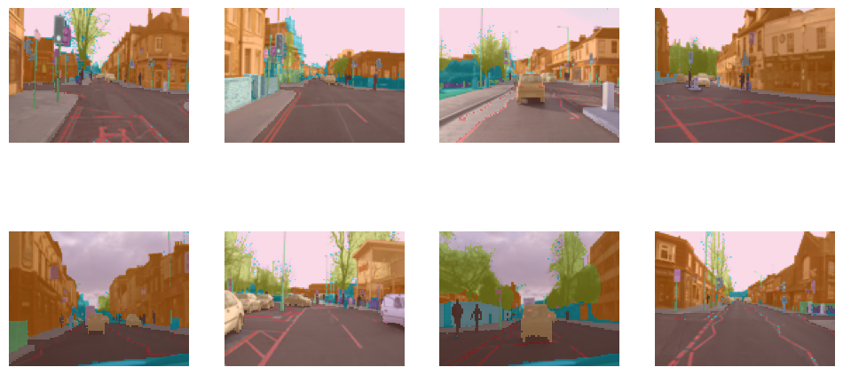
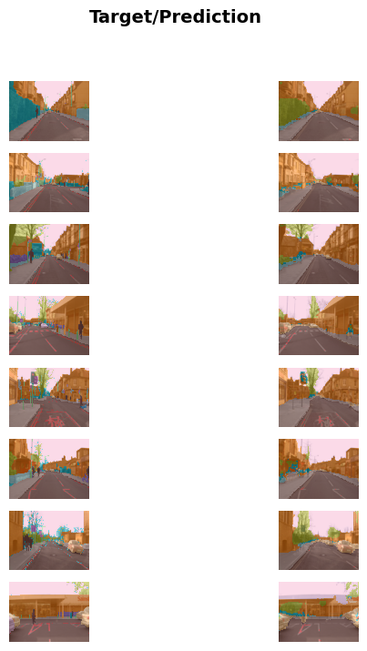

!pip install -Uqqq fastaiIntroduction
Can you recognize various objects from the above picture? Our eyes have the ability to see a complete image and recognize the distinguishing objects from it. We know there is a car on the left, a person ahead on the right, etc. Can we make computers do this?! Let us find out!
What Is Segmentation?
Segmentation refers to the process of dividing an image into multiple regions or segments, where each segment corresponds to a specific object or background.
The goal of a segmentation model in Deep Learning is to recognize the content of every individual pixel in an image thereby localizing objects in it.
This task is very important for self-driving cars, for example. If a self-driving car doesn’t know where a pedestrian is, then it doesn’t know how to avoid one!
Building A Segmentation Model
We will train a simple segmentation model using the fastai library.
Installing & Importing Relevant Libraries
We will install the fastai software and export all the vision libraries, since this is computer vision task.
from fastai.vision.all import *Getting Training Data
We will use a subset of the CamVid dataset from the paper “Semantic Object Classes in Video: A High-Definition Ground Truth Database” by Gabriel J. Brostow et al.
The following code gets the data for us!
path = untar_data(URLs.CAMVID_TINY)
path
100.18% [2318336/2314212 00:00<00:00]
Path('/root/.fastai/data/camvid_tiny')Now that we got the data, before using it for training our model, we we will have to specify fastai what kind of data we have, how it is structured, and for what task are we going to use it.
The following code does this.
dls = SegmentationDataLoaders.from_label_func(path, bs = 8, fnames = get_image_files(path/'images'),
label_func = lambda o: path/'labels'/f'{o.stem}_P{o.suffix}',
codes = np.loadtxt(path/'codes.txt', dtype = str))Let us have a look at our data!
dls.show_batch()
These are the 8 images for which we will train a model that can recognize its objects.
Using A Learner & Fine-tuning
We will use a unet learner and resenet34 architecture, a pre-trained model to fine-tune it for our task of segmentation.
learner = unet_learner(dls, resnet34)
learner.fine_tune(10)/usr/local/lib/python3.10/dist-packages/torchvision/models/_utils.py:208: UserWarning: The parameter 'pretrained' is deprecated since 0.13 and may be removed in the future, please use 'weights' instead.
warnings.warn(
/usr/local/lib/python3.10/dist-packages/torchvision/models/_utils.py:223: UserWarning: Arguments other than a weight enum or `None` for 'weights' are deprecated since 0.13 and may be removed in the future. The current behavior is equivalent to passing `weights=ResNet34_Weights.IMAGENET1K_V1`. You can also use `weights=ResNet34_Weights.DEFAULT` to get the most up-to-date weights.
warnings.warn(msg)
Downloading: "https://download.pytorch.org/models/resnet34-b627a593.pth" to /root/.cache/torch/hub/checkpoints/resnet34-b627a593.pth
100%|██████████| 83.3M/83.3M [00:00<00:00, 298MB/s]| epoch | train_loss | valid_loss | time |
|---|---|---|---|
| 0 | 2.925367 | 1.908659 | 00:11 |
| epoch | train_loss | valid_loss | time |
|---|---|---|---|
| 0 | 1.629299 | 1.505528 | 00:01 |
| 1 | 1.446579 | 1.181775 | 00:01 |
| 2 | 1.380383 | 1.429530 | 00:01 |
| 3 | 1.333090 | 1.063483 | 00:01 |
| 4 | 1.237765 | 1.000342 | 00:01 |
| 5 | 1.134848 | 0.884875 | 00:01 |
| 6 | 1.037858 | 0.903598 | 00:01 |
| 7 | 0.948801 | 0.812336 | 00:01 |
| 8 | 0.874415 | 0.829520 | 00:01 |
| 9 | 0.816568 | 0.826488 | 00:01 |
The training is done! It trained for about 15-20 sec.
Let us see the results!
learner.show_results(figsize = (7, 8))
Voila! On the left are the original images, and on the right are the ones that were segmented by our model. We can clearly see that it did a pretty good job in recognizing the pixels! For some, it got a few things wrong, but for most of them it got right!
To summarize, computers now can identify objects in an image, that too pretty well!
A Poem
Here is a poem generated by ChatGPT on Segmentation.
Oh, segmentation task, segmentation task, Dividing images is its awesome task. To split an image into regions fine, And label each one, that is the line.
Segmentation finds objects in a snap, And separates them from the background’s trap. In autonomous cars it plays a role, To avoid obstacles and reach the goal.
In medical images it helps a lot, To pinpoint where the issues are wrought. Convolutional neural networks take charge, And extract features like a boss, it’s large!
They label each pixel with a keen eye, And categorize them, oh so sly. Object recognition, it can aid, And much more, the list won’t fade.
Segmentation task, oh how grand, In computer vision, it’s in high demand! Precise and accurate, it must be, So many applications, it sets us free!